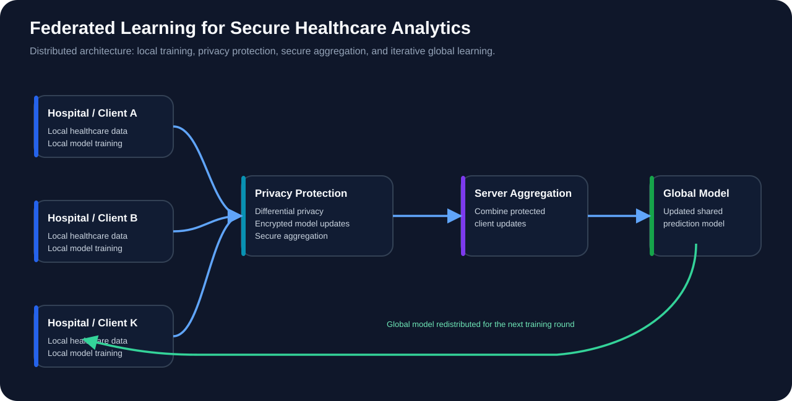

Federated Learning
Collaborative model training across decentralized participants without transferring raw local datasets.
DISTRIBUTED MACHINE LEARNING • HEALTHCARE • PRIVACY
A privacy-preserving machine learning framework for collaborative healthcare prediction without centralizing sensitive patient data.
THE PROBLEM
Healthcare organizations can benefit from diverse data when developing predictive models, but centralizing patient records creates privacy and security concerns. This project explores collaborative machine learning while keeping local data decentralized.
SYSTEM ARCHITECTURE

TECHNICAL APPROACH
Collaborative model training across decentralized participants without transferring raw local datasets.
Client-side privacy protection reduces the risk of sensitive information leakage from model updates.
Protected aggregation reduces exposure of individual client contributions during global updates.
Model-update sparsification was evaluated to reduce communication demands during distributed training.
EVALUATION
The framework was evaluated on the Framingham and Cleveland Heart Disease datasets. Privacy and robustness were also examined through membership-inference and gradient-reconstruction attack simulations.
ENGINEERING TAKEAWAY
This work combines predictive performance with privacy protection, robustness testing, secure aggregation, and communication efficiency. It reflects my broader interest in building machine learning systems suitable for high-stakes environments.
MORE WORK